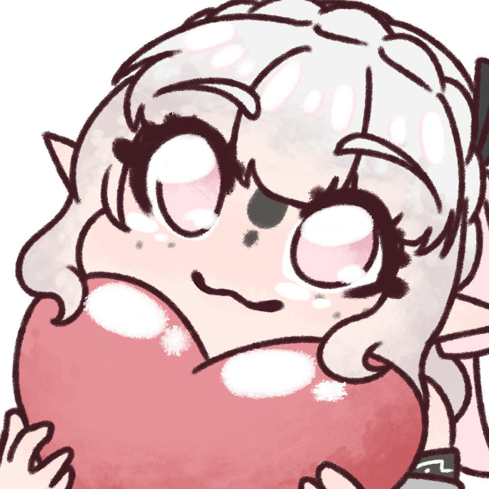

Nele Wiki est une base de données non officielle recensant les quarts de cœur, les bouteilles et les cadeaux des Grandes Fées dans Ocarina of Time et The Wind Waker.
L'objectif est simple : proposer un guide clair, rapide à consulter et sans publicité, avec l'emplacement exact de chaque collectible et la marche à suivre complète pour l'obtenir.
Toutes les données du site sont libres et téléchargeables en JSON, CSV ou XML depuis la page d'accueil.

À propos de la créatrice
Moi c'est Blossum ! Grosse fan de la licence depuis ma plus tendre enfance, j'avais pour projet de créer un petit guide non officiel de tous les check utiles tel que les Grandes Fées, les bouteilles ou encore les quarts de coeur !
Je suis essentiellement Vtubeuse et Illustratice, mais il m'arrive souvent de coder pour rendre ma vie plus simple (*˘︶˘*).｡.:*♡
Support
Nele Wiki restera toujours gratuit et sans publicité. Si le site t'a été utile et que tu as envie de soutenir sa création, un petit café fait toujours plaisir. ☕